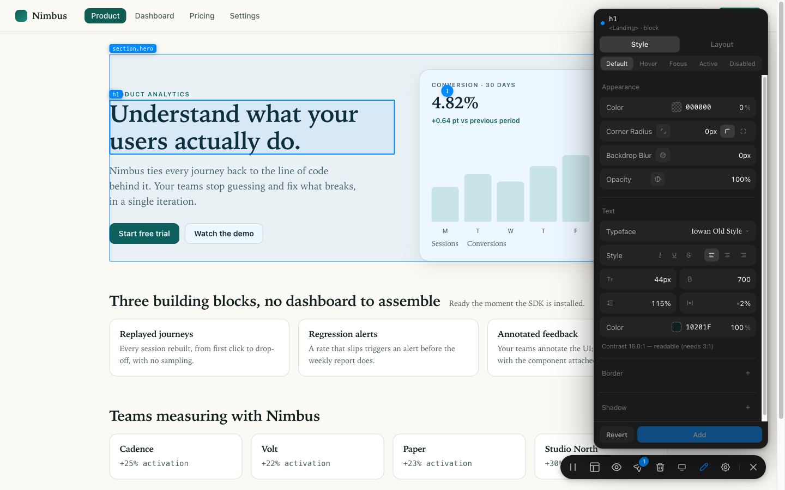

For the web
Annotate any page, restyle it live
A JavaScript package that mounts an overlay on your running site: annotate, open a Figma-style inspector and change the real CSS, or wireframe a whole component — then send one agent-ready message.
- Stack
- JS / TypeScript · React, Vue, Svelte, plain HTML
- Install
npm install annotate-kit- Repo
annotate-kit-web· private